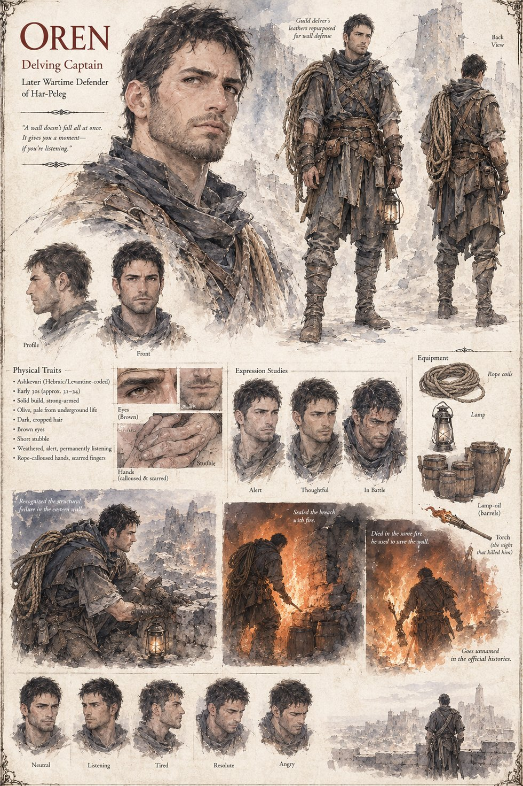

Oren
Delving Captain · later Wartime Defender of Har-Peleg
A guild delving captain whose ear for a chamber's failing structure carries over, later in life, into an entirely different kind of defense: recognizing the exact moment Har-Peleg's eastern wall is about to give during the war, and sealing the breach with fire before it does. The fire that saves the wall is also the fire that kills him. The official histories don't record his name.
“A wall doesn't fall all at once. It gives you a moment — if you're listening.”